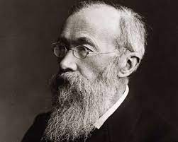
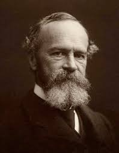
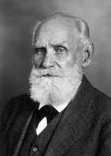

Psychologie |
| Startseite | Geschichte | Einflüsse aufs Leben | Fächer Grundlagen | Alltag/Wissenschaft | Psychologen | Einordnung |
Einflussreiche PsychologenWilhelm Wundt (1832-1920)Dieser Physiologe, Psychologe und Philosoph hat 1879 in Leipzig (Deutschland) das erste Labor für experimentelle Psychologie eingerichtet. Er ist berühmt geworden, da sein Laboratorium den Beginn einer neuen Periode der Psychologie markiert hat: den der wissenschaftlichen Psychologie. William James (1842-1910)Im Gegensatz zu Wundts Verständnis von Psychologie entwickelte William James in den Vereinigten Staaten den Funktionalismus. Dieser Philosoph wies darauf hin, wie wichtig es sei, die Funktionen des Geistes zu kennen, die es ihm erlauben, sich an seine Umgebung anzupassen. Ivan Pawlow (1849-1936)Pawlow war ein experimenteller Physiologe, der stark von der russischen Reflexologie beeinflusst war, einem klaren Vorläufer des Behaviorismus. Ohne Zweife gilt er heute als einer der berühmtesten Psychologen der Welt. Er verteidigte eine objektive und streng experimentelle Methodik. Er vernachlässigte allerdings die Gedankengänge selbst, da sie, wie es auch die Ansicht von Wundt war, für ihn nicht messbar waren. Sigmund Freud (1856-1939)Dieser österreichische Arzt und Neurologe gilt als einer der größten Intellektuellen des 20. Jahrhunderts. Er ist nicht nur der Vater der Psychoanalyse, sondern setzte mit seiner Theorie des Unbewussten auch einen der wichtigsten Meilensteine in der Psychologie. Carl Rogers (1902-1987)Zusammen mit Maslow war Carl Rogers einer der führenden Vertreter der humanistischen Psychologie. Im Gegensatz zu den Psychoanalytikern vertrat Rogers eine positive Sicht auf Menschen. In der Tat hielt er an der Idee fest, dass Menschen von Natur aus gut seien. Daher sollten sie nicht durch Abwehrmechanismen kontrolliert werden, sondern frei sein, sie selbst zu sein. Burrhus Frederic Skinner (1904-1990)Skinner gilt als der Hauptvertreter des Behaviorismus und war stark beeinflusst von Pawlow. Er stellte die Existenz zweier Arten erlernter Antworten fest, konzentrierte sich jedoch auf die Operanten. Dafür schuf er ein experimentelles Modell, eine bahnbrechende Arbeit in der Psychologie, die er die operante Konditionierungskammer nannte. Dennis Frenzel E-Mail: 210319@studierende.htl-donaustadt.at |



|